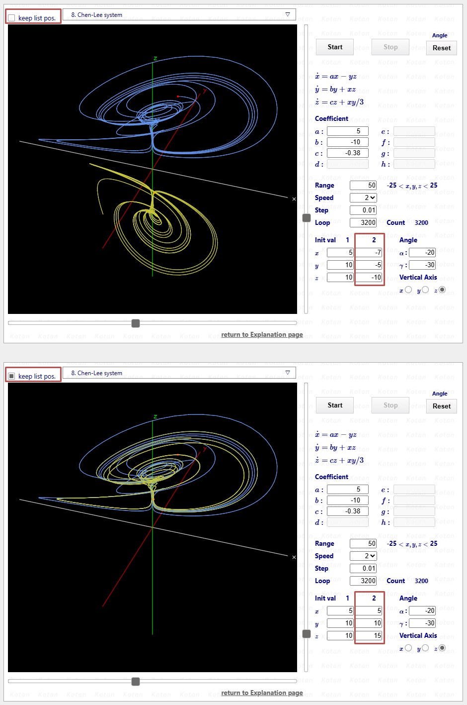

Differential Equation 3D Visualization Tool : Plain Document
Differential Equation
3D Visualization Tool
Plain Document
This tool draws solution trajectories of 3-dimensional differential equations. While there are equations that draw mysterious trajectories even in 2D, in 3D, seemingly simple equations can produce chaotic solution trajectories depending on specific parameters and initial values. These equations exhibit bounded yet whimsical trajectories. I searched online and gathered equations with intriguing properties. The drawing of solution trajectories is approximated using the 4th Order Runge-Kutta method. Two points are specified as initial values, and the trajectories evolving over time are dynamically plotted.
After drawing, you can observe the solution trajectories from various angles by changing the Angle and Vertical Axis.
I'd like to provide a brief explanation according to the titles displayed in the dropdown box. However, I lack the knowledge for such explanations, so I'll simply provide brief comments and URLs of the sites where the equations are introduced.
The drawing page uses Local Storage. Refer to Notes [1].
I first encountered the Lorenz system in the late 1980s when chaos and fractals were popular. I remember extending the programming source included in Mitsuo Morimoto's "Differential Equations Using Computers to 3D and drawing the solution trajectory of the Lorenz system.
The Lorenz system became well known because of its sensitive dependence on initial conditions: even a very small difference in the starting values can lead to completely unexpected trajectories, despite the solutions remaining bounded. This phenomenon is widely known as the “butterfly effect.” The name “butterfly” comes from the shape of the attractor formed by the trajectories, which resembles a butterfly with its wings spread. In recent years, the term “butterfly effect” has been frequently used in NHK programs... :-(
The Lorenz system forms a single strange attractor that resembles a butterfly with its wings spread. For the parameter values shown below, even if the initial point (the starting point of the trajectory) is far from the attractor, the trajectory will gradually be drawn into the butterfly. This is a characteristic feature of the Lorenz system.
You can find plenty of hits if you search for the Lorenz system. For reference, I'll mention the following site.
The parameters often used are $a = 10.0, b = 28.0, c = 8.0 / 3.0$. This tool also uses these values by default. Initial values are set as $(0, 1, 2)$ and $(0, 1, 2.01)$.
While it's hard to believe this equation leads to chaos, it indeed does.
For the Thomas model, please refer to the following site.
1. Thomas' cyclically symmetric attractor
In the simulation tool, the parameter is set to $a = 0.21$, and the initial conditions are $(x, y, z) = (0, 1, 2)$ and $(0, -1, -2)$. Under these conditions, two attractors exist symmetrically with respect to the origin. When the value of $a$ is increased (e.g., to around 3), the trajectories converge to a single point. When $a$ is decreased (e.g., to around 0.19), the trajectories begin to mix while preserving symmetry about the origin, eventually forming a single attractor and exhibiting chaotic behavior.
This can be interpreted as follows: when $a$ is large, the damping terms $-ax, -ay, -az$ are strong, preventing trajectories from crossing the basin boundary, resulting in two separate attractors. As $a$ decreases, the oscillatory terms ($\sin$) become dominant, allowing trajectories to cross the boundary and move between regions, thereby forming a single attractor.
The trajectory resembles two Lorenz systems combined together. This formulation was based on the first reference site I found; it differs slightly from other published Four-Wing equations. However, when plotted, it clearly produces a Four-Wing attractor.
The following site was the first reference I found for the Four-Wing system.
The tool uses parameters $a = 0.2$, $b = 0.01$, $c= -0.4$, and initial values $(x, y, z) = (0, 1, 2)$ and $(0, 1, 2.01)$.
This system behaves similarly to the Thomas model, showing relatively regular motion while still exhibiting chaos. Although increasing the rendering speed makes it harder to see, it exhibits sensitivity to initial conditions.
For information about the Halvorsen system, please refer to the following site.
In the simulation tool, the parameter is $a = 1.499$, and the initial conditions are $(x, y, z) = (0, 1, 2)$ and $(0, 1, 2.01)$.
This system was proposed by the German biologist Otto Rössler in a 1976 paper.
Although the Rössler system is very simple, with only one nonlinear term ($zx$ in the third equation), it still generates chaotic behavior. It was originally discovered during research on chaos and was later found to be useful for modeling chemical reaction equilibria.
For details on the Rössler system, please refer to the site below.
In the simulation tool, the parameters are $a = 0.2, b = 0.2, c = 5.7$, and the initial conditions are $(0, 1, 2)$ and $(0, 1, 2.01)$.
This equation was designed by Julien C. Sprott as part of his search for minimal chaotic systems, and several such systems exist. Despite its extremely compact form, it is capable of producing chaos and exhibits sensitivity to initial conditions.
For details on the Sprott B system, please refer to the site below.
1. Simple Chaotic Flow GIF Animations
In the simulation tool, the parameters are $a = 0.4, b = 1.2, c = 1$, and the initial conditions are $(0.1, 1, 1)$ and $(0.11, 1, 1)$.
The trajectories move among three attractors in a complex manner. As in the Lorenz system, sensitivity to initial conditions is observed.
For details on the Rabinovich–Fabrikant system, please refer to the site below.
1. Rabinovich–Fabrikant equations
In the simulation tool, the parameters are $a = 0.14, b = 0.1$, and the initial conditions are $(-1, 0.9, 0.6)$ and $(-1, 0.9, 0.60001)$.
This system exhibits sensitivity to initial conditions and produces chaotic trajectories within attractors. Unlike the Lorenz system, which has a single attractor, the Chen–Lee system has multiple attractors, and the specific attractor approached depends on the initial conditions.
For details on the Chen-Lee system, please refer to the site below.
1. 3D Chaotic Attractors – The Sequelaen Collection
In the simulation tool, the parameters are $a = 5.0, b = -10.0, c = -0.38$, and the initial conditions are $(5, 10, 10)$ and $(-7, -5, -10)$.
This system was proposed by the Chinese mathematician Chen Guanrong and can be regarded as a nonlinear extension of the Lorenz system. Like the Lorenz system, it has a single attractor and exhibits sensitivity to initial conditions.
The Chen system has applications in secure communications, synchronization, and control.
For details on the Chen system, please refer to the site below.
1. Fully Integrated Chen Chaotic Oscillation System
In the simulation tool, the parameters are $a = 40, b = 3, c = 28$, and the initial conditions are $(-0.1, 0.5, -0.6)$ and $(-0.1, 0.5, -0.601)$.
The Chua circuit, which exhibits chaotic behavior, was invented in 1983 by the Chinese-American computer scientist Leon O. Chua . It can be constructed using capacitors, an inductor, resistors, and a nonlinear element (the Chua diode).
Because its dynamics can be accurately modeled by differential equations, the Chua system is one of the rare chaotic systems that can be physically realized and experimentally verified.
For details on the Chua system, please refer to the site below.
In the simulation tool, the parameters are $a = 15.41, b = 28, c = -0.714, d = -1.143$, and the initial conditions are $(-0.000001, 0, 0)$ and $(-0.0000011, 0, 0)$.
With these parameters, a double-scroll attractor appears and exhibits sensitivity to initial conditions. By adjusting the parameters, single-scroll and periodic attractors can also be obtained.
This equation is often cited as a typical example of a quasiperiodic attractor. A similar system is the Aizawa system; although some coefficients and nonlinear terms differ, they share very similar properties.
For details on the Langford system, please refer to the site below.
1. Numerical Studies of Torus Bifurcations
In the simulation tool, the parameters are $a = 0.7, b = 3.5, c = 0.6, d = 1, e = 0.25, f = 0$,
and the initial conditions are $(1, 1, 1)$ and $(1, 1, 1.1)$.
In this case, the trajectory is quasiperiodic and evolves on a torus,
forming a very beautiful attractor.
However, when the coefficient $c$ is increased to around 0.8, the torus begins to break down and the system transitions to chaos, exhibiting sensitivity to initial conditions.
This system was introduced by Dadras and Momeni in 2009 and generates multi-scroll attractors.
For details on the Dadras system, please refer to the site below.
1. A novel three-dimensional autonomous chaotic system generating two, three and four-scroll attractors
In the simulation tool, the parameters are $a = 3, b = 2.7, c = 1.7, d = 2, e = 5.4$,
and the initial conditions are $(1, 1, 0)$ and $(1, 1, 0.1)$.
In this case, a four-scroll attractor is obtained;
however, increasing $e$ from 5.4 to around 9 changes it to a three-scroll attractor.
[1.]
The drawing page provides a function to store the parameters of the selected equation using Local Storage. Changing the starting point of the trajectory or modifying coefficients can drastically alter the solution path. Some of the referenced websites for each equation offer detailed explanations.
Once you start modifying parameters, you will typically adjust them gradually while observing how the solution trajectory changes. In my case, I often spend quite a bit of time tuning them, and it is common for me to think, “I’ll continue this tomorrow.” In such situations, having the parameters saved is extremely convenient. Also, if you happen to find a set of parameters that produces a remarkable trajectory, saving those parameters allows you to accurately reproduce the same trajectory later.
Therefore, as shown below, a checkbox has been added to retain the parameters of the selected equations.

In the figure, the checkbox is shown to the right of “keep params.”
The upper half of the figure shows the state where the checkbox is unchecked, displaying the default parameters.
The lower half shows the state where the checkbox is checked; in this example, the starting point of the trajectory has been changed.
The checkbox operates independently for each equations. The data stored in Local Storage is as follows:
- <1>Which equations have the checkbox checked
- <2>If parameters of a checked equation are modified, those parameter values
- <3>The last equations displayed in the browser (managed by its number)
If you want to modify the parameters of the equation currently displayed, check the box first and then change the desired parameters. The data will be automatically saved to Local Storage.
If you create a shortcut to the drawing page and reopen the browser after closing it, the previously displayed page will open again with the modified parameters applied.
If you uncheck the box and reload the page, the default parameters will be displayed. Whenever you want to return to the original state, simply uncheck the box.
If you check the box again and reload the page, the page will open with the modified parameters applied.
I personally find this to be a very convenient feature. Once you check the box on any page, data will be stored in Local Storage. Even if you uncheck all pages, the data will remain. Even after unchecking all pages, reopening the browser will display the last viewed equation page.
If you want to completely delete the drawing page data from Local Storage, please follow the steps below. Here, Google Chrome is used as an example.
- <1>Click the settings button (three vertical dots) in the top right corner of the screen
- <2>Select More tools → Developer tools to open the Developer Tools panel
- <3>Click the "Application" tab from the menu
- <4>Right-click each of the following keys and click "Delete"
- kkoDeq3D_CheckFlg
- kkoDeq3D_Data
- kkoDeq3D_LastSelected
- <5>All drawing page data will be removed from Local Storage
After deleting all drawing page data from Local Storage, reloading the browser will leave no equations selected, and the equations selection box will display “Select equations.”
This means the system has been completely reset to its initial state.